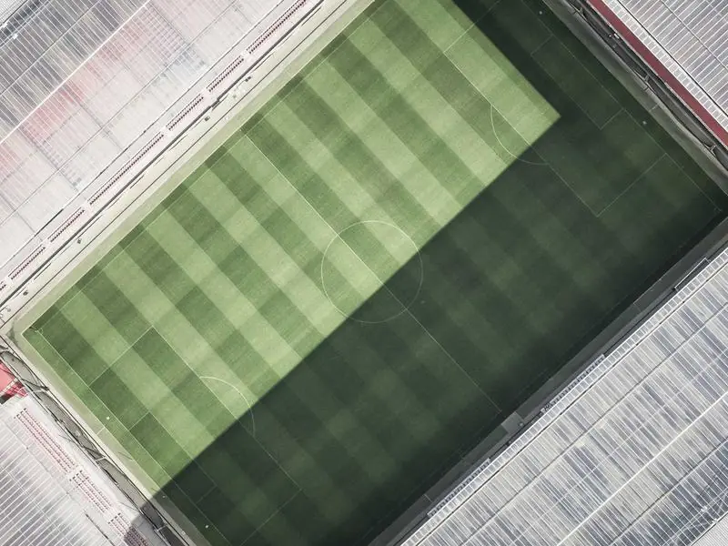

Арест в Чикаго. Отель «Рокфор». Дверь номера 643 вылетает под ударами плеч детективов. Перед ними — забинтованный, дрожащий человек с безумными глазами. Эндрю Ван. Или Андреа Твэр. Его припадок эпилепсии стал финальной точкой в этом деле. Он признался во всем: как заманил Крозака, как подменил тела, как методично убирал братьев, прикрываясь формой Анха (Египетского креста), чтобы направить следствие по ложному пути египтологии.
Дело закрыто. Эллери Куин уходит в ночь, зная: самый страшный монстр — это разум, лишенный сердца. Тень Египетского креста больше не пугает его, она стала лишь очередной строчкой в его архиве.
Конец следственного дела №32-EQ.